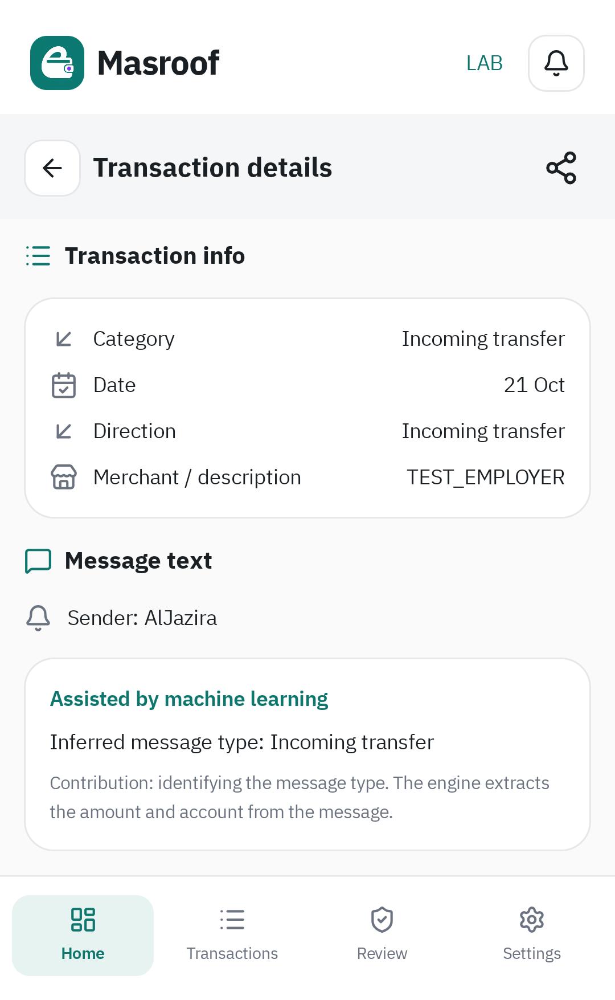
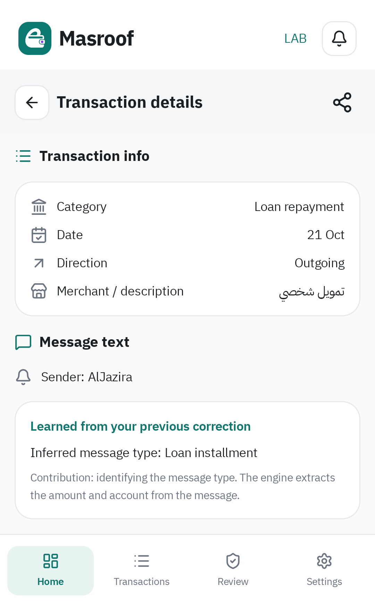
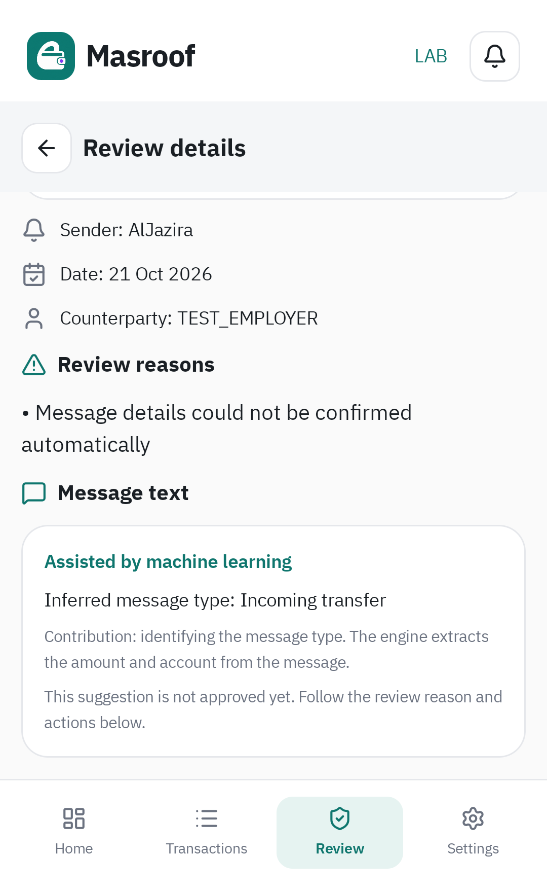

مصدر مساهمة ML، معالجة الصيغ المعروفة، وتنظيف المختبر
الإعداد والملكية والاستيراد والحسابات والمراجعة تستمر عبر نسخة واجهات ومسارات مصروف الفعلي. الإضافة المرئية الوحيدة هنا قسم يشرح مساهمة ML بجانب الرسالة عند مشاركته. لا تعديل على ملفات app/ أو ui-kit/، ولا تغيير لجداول البيانات المالية أو بوابات اعتماد العمليات.
نفس الحزمة والدخول من إعدادات المطورين. يستمر العمل في PR #306؛ لم يتم الدمج أو الإصدار تلقائيًا.
ما الذي ستراه؟
| مصدر النوع | ما يظهر في تفاصيل العملية والمراجعة |
|---|---|
| القواعد المعروفة | لا يظهر قسم ML؛ وجود نموذج نشط لا يعني أنه شارك في الرسالة. |
| النموذج الإحصائي | «بمساعدة تعلّم الآلة»، النوع المستنتج، وتوضيح أن مساهمته تحديد نوع الرسالة وأن المحرك يستخرج المبلغ والحساب. |
| قالب من قرار بشري | «تعلّم من تصحيحك السابق» مع النوع المستنتج؛ يظل مختلفًا عن تنبؤ النموذج الإحصائي. |
| اقتراح لم يجتز التحقق | توضيح صريح أنه لم يُعتمد بعد. القسم لا يضيف زر اعتماد ولا يسمح بتجاوز المراجعة. |
| قرار يدوي يستبدل التفسير أو دليل ناقص | يُخفى التفسير المساعد الذي لم يعد موثوقًا؛ لا ننسب قرار المستخدم إلى النموذج. |
الشرح يعتمد على التفسير الحالي المحفوظ لكل رسالة، لا على سجل التشخيص غير المتزامن. إذا ارتبطت رسالتان بحركة واحدة فلكل منهما مصدرها. لا نعرض نسب ثقة أو كلمات مؤثرة، ولا نغيّر حسابات الرئيسية لعرض الشرح.






الفجوات التي أُصلحت
- صيغة
خصم: قسطدون اشتراط عبارة «قسط تمويل» كاملة. - مسميات تمويل المركبة وأوتو والمسكن والرهن، والتعامل مع «تمويل» العام مثل الفعلي. تبقى أنواع القرض المتعارضة بحاجة إلى مراجعة.
- عنوان «رسوم» المختصر و
Withdrawal، مع إبقاء رسم ملحق بحوالة منفصلًا عن مبلغ الحوالة وعدم تغيير نوعها. - إشعارات رصيد نقاط المكافآت تُعامل كإشعارات غير مالية. إذا اختلط إشعار بحركة مالية متعارضة تبقى الرسالة قابلة للمراجعة.
- استخراج حساب المرسل الرقمي من سطر «من» في الحوالة الواردة، دون تحويل اسم المرسل إلى حساب.
- عند تغير إصدار القواعد أو النموذج تُعاد محاولة تفسير المراجعات العالقة المناسبة بدفعة واحدة، مع المصالحة وإشارة تحديث الواجهة. لا تعاد كتابة الحركات المسجلة أو القرارات اليدوية لهذا الغرض.
المعالجة الفورية تعني التسجيل خلال دورة استقبال الرسالة أو دفعة الاستيراد نفسها بعد تأكيد الملكية، دون انتظار تدريب أو عامل تحديث النموذج. نقص الملكية والتعارض وانتظار المطابقة وفشل الكتابة لها إجراءاتها الأصلية.
النتائج المالية والحدود المقصودة
تمت مقارنة الاستيراد والمصالحة وRoom والرئيسية بين المحركين. شملت الدفعة الجديدة ١٢ رسالة: ست صيغ أقساط، رسوم وسحب، وحوالات بين حساباتي وإلى طرف آخر داخل البنك وإلى بنك خارجي. جميعها سُجلت في دفعة الاستيراد دون تعلم أو تحديث يدوي إضافي؛ إعادة الاستيراد وإعادة الفتح تحافظان على النتائج.
الفرق المقصود هو الاحتفاظ باسم البنك الخارجي الصريح بدل UNKNOWN. لذلك قد تحمل الحركة مرجع وجهة خارجيًا إضافيًا، لكن هذا لا يمنحها ملكية ولا يغيّر المبلغ أو نوع الحركة أو مؤشرات الرئيسية. اختبرنا تحديدًا وجهة D360 لها نفس آخر أربعة أرقام لحساب جزيرة مملوك: بقيت حوالة إلى طرف خارجي. بقي كذلك تحسين حفظ الرصيد المصرح به في الاسترجاع؛ والفروق المحددة موثقة في قائمة الفروق المعتمدة.
ما بقي ثابتًا في ML وLessCode
بقي ml-assist مستقلًا عن Android والمحرك والمستودعات المالية. المحرك يعمل بالقواعد أولًا، وML يساعد في النوع فقط، ثم يمر الاستخراج عبر التحقق والمصالحة الأصليين. تنظيف المدخلات في التدريب والاستدلال مستمر بالإصدار نفسه.
النموذج family-nb-v2-3e5e3449be7831ba وبياناته المجمدة لم يتغيرا. القدرة الإحصائية المفعلة ما زالت TRANSFER_IN؛ ذاكرة القرارات البشرية منفصلة. صيغ الاختبار الجديدة في testdata/supported/ مخصصة لتغطية القواعد ولم تُضف سرًا إلى التدريب أو holdout.
التنظيف النهائي
- حذف
LearningTokenizationوSenderRouterواختباراتهما الأربعة؛ لا مستهلك لهما في التشغيل أو التدريب أو Manifest أو التوليد. بقي مطبّع النص الفعلي واختبارات أدلته، والتوجيه التشغيلي المعتمد عبر Registry والـadapter. - حذف تعبير الوقت القديم غير المستخدم واستيراده، وجعل مسار كاش التعلم خاصًا بدل كشفه دون مستهلك.
- توحيد مقارنة حقول المحرك مع الفعلي في مساعد اختبار واحد. كل فرق يجب أن يطابق القيم المحددة في سجل الفروق، بدل تجاهل جميع البنوك غير المعروفة.
- المولّد يضيف استيراد
RوBuildConfigعند الحاجة فقط. تنظيف تحذيرات محلية لمسارات البناء والاختبار. - الاحتفاظ بعناصر التوافق
BetaContainer / BetaEnvironment / BetaStartStateوعلامةBetaDatabase.ktلأن اختبارات العزل الموجودة في الفعلي تستخدمها. لم نعدل تلك الاختبارات أو نحذف مستهلكاتها.
أدلة التحقق
١٩٧٦ اختبار JVM، و١٤ اختبار Android على API 36، و٢٩ فحص Python: صفر إخفاق وصفر اختبار متجاوز.
نجح بناء APK وlintDebug وdetekt وlintAfterDebug. أُعيد اختبار الجهاز بعد التنظيف؛ قارنت الاختبارات ٧٠ fixture وأعادت تشغيل ٤١ اختبار regression من الفعلي. النموذج المجمد قابل لإعادة الإنتاج، وAPK يحتوي مصنّف ML واحدًا وseed واحدًا دون المحلل المرجعي أو الأصناف الملغاة.
الأعداد والنطاق وبصمة APK · نتيجة Android النهائية · أوامر التحقق · إعادة إنتاج النموذج. حالة GitHub CI للـhead الحالي تظهر في PR، ولا تُستنتج من تشغيل سابق.
قائمة الملفات والنطاق والتنظيف · بصمات مصادر الفعلي المحمية · نقاط ربط الشرح المضافة فقط · تقرير دورة الحياة · تقرير فصل ML وتنظيف مدخلاته
التغطية تخص الصيغ المتاحة والمختبرة، وليست ادعاء فهم كل رسالة مستقبلية أو كل بنك. لا تغيير لمخطط القاعدة المالية: ١٤ جدولًا ماليًا وجدولا تعلم مساعدان منفصلان كما كانا.